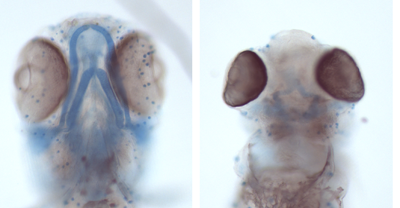
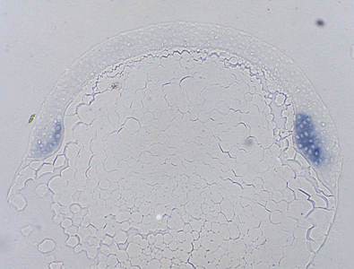

Main research interests
Disease models
Due to its small size, high progeny and transparency, zebrafish became one of the star model organisms of developmental biology. And once its genome was sequenced, it was also revealed that 70% of human genes have fish equivalent (ortholog), what makes this small vertebrate species an excellent choice for modeling human disease.
The expansion of the zebrafish genetic toolkit with novel transgenesis and genome editing techniques created the right circumstances to develop models for specific human diseases. The fish equivalent of the respective human gene was silenced/knocked out, and the resulting mutant fish could be used to characterize the molecular changes related to the disease. As mutant fish can be created in high numbers, this model organism is ideal for testing a high number of drug precursors at once, which can greatly speed up the development of novel therapies as well.
We are involved in several projects to develop such models for (monogenic) genetic diseases.
Our main collaborations:
- Kálmán Tory (Semmelweis University) leads the HAS-SU "Lendület" (Momentum) Nephrogenetic Laboratory, and we are collaborating to create models for nephrotic syndromes.
- With the group of Mihály Kovács (ELTE, Dept. of Biochemistry) we study the role of RecQ helicases in vertebrate development.
- together with András Váradi (HAS-RCNS) we created a model for the pseudoxanthoma elasticum (PXE) disease.
- Gábor Pál (ELTE, Dept. of Biochemistry) and colleagues study to function of the human complement system, and the genes involved in this process.
Embryonic development and the stem cells of the visual system

One of the first hallmarks of embryonic development is the establishment of the future body axes. In the developing zebrafish embryo the anterio-posterior (AP) and dorsoventral (DV) axes can be distinguished by eye by the end of the gastrulation.
Thanks to the pioneering wokr of Hans Spemann and Hilde Mangold during the 1920s we understand that on the future dorsal side of the embryo a special tissue, the "organizer" forms early in development. This group of cells is capable instructing nearby tissues to form the body axis.
Using a special, "organizer-less" mutant, in our earlier work we identified several dozen genes that are activated during the development of the DV axis. We are still analysing several of these new candidates, to understand the role they play during these early stages of development.
During later development, cell divisions are slowed, but there are a few tissues that still contain highly proliferative cells. These are the precursors of the adult stem cells.
Unlike mammals which contain only a few bona fide stem cell populations in their brain, the central nervous system of a zebrafish contains many neural stem cells. Due to the presence of such cells the zebrafish can grow throughout its life, but also retains amazing regenerative capabilities.
Together with the groups ofSteve Wilson (University College London - UCL) and Kara Cerveny (Reed College) we study the stem cell populations residing in the optic tectum (OT) of zebrafish, searching for factors that can affect their proliferation.
Other research interests
Autophagy
With the group of Tibor Vellai we aim to develop novel genetic tools that would help us to study the process of cellular self-digestion, aka. (macro)autophagy in zebrafish.
MoreOptopharmacology
The group of András Málnási-Csizmadia has developed a highly innovative novel approach to activate reagents in subfemtoliter volumes. The Molecular Tatto has great promise for future research, and we are providing them with fish models to test their reagents.
Behaviour and neural circuits
We collaborate with several groups of HAS-IEM to study, what kind of neural processes and circuits regulate the behaviour of zebrafish larvae, and how can we affect them.
Recent publications:
- Máté Varga (2018) The Doctor of Delayed Publications: The Remarkable Life of George Streisinger (1927–1984) ZEBRAFISH DOI: 10.1089/zeb.2017.1531
- Kitti Csályi, Dávid Fazekas, Tamás Kadlecsik, Dénes Türei, Leila Gul, Balázs Horváth, Dezső Módos, AmandaDemeter, Nóra Pápai, Katalin Lenti, Péter Csermely, Tibor (2016) SignaFish: a zebrafish-specific signaling pathway resource. ZEBRAFISH 13(6): 541-544.
- Várkuti BH, Képiró M, Horváth IÁ, Végner L, Zsigmond Á, Hegyi G, Varga M, Málnási-Csizmadia A (2016) A highly soluble, non-phototoxic, non fluorescent blebbistatin 6: 26141.
- Papp D, Kovács T, Billes V, Varga M, Tarnóci A, Hackler L Jr, Puskás LG, Liliom H, Tárnok K, Schlett K, Borsy A, Pádár Z, Kovács AL, Hegedűs K, Juhász G, Komlós (2016) AUTEN-67, an autophagy-enhancing drug candidate with potent antiaging and neuroprotective effects. AUTOPHAGY. 12(2):273-286.
- Képiró M, Várkuti BH, Rauscher AA, Kellermayer MS, Varga M, Málnási-Csizmadia A (2015) Molecular tattoo: subcellular confinement of drug effects. CHEMISTRY&BIOLOGY 22(4):548-58.
- Máté Varga, Miklós Sass, Diána Papp, Krisztina Takács-Vellai, Daniel J Klionsky, Tibor Vellai (2014) Autophagy is required for zebrafish caudal fin regeneration, CELL DEATH AND DIFFERENTIATION 21: (4) pp. 547-556.
- Fodor E, Zsigmond A, Horvath B, Molnar J, Nagy I, Tóth G, Wilson SW, Varga M (2013) Full Transcriptome Analysis of Early Dorsoventral Patterning in Zebrafish, PLOS ONE 8: (7) 13 p. Paper e70053
Our supporters